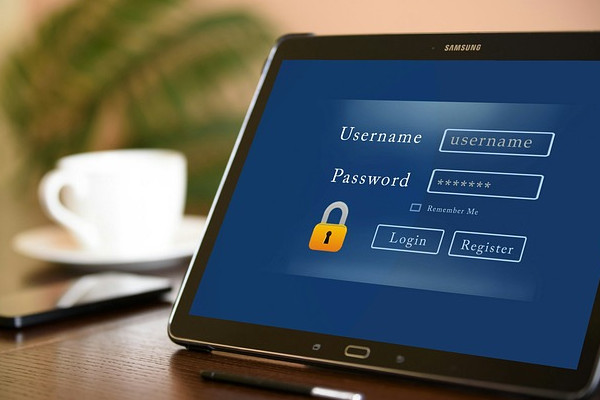

Como Criar Senhas Seguras e Memoráveis
1. Escolha uma frase base forte:
Comece escolhendo uma frase base única e fácil de lembrar, como uma linha de uma música ou um ditado. Evite frases comuns e opte por algo pessoal e significativo para você.
2. Use a primeira letra de cada palavra:
Transforme sua frase base em uma senha inicial usando a primeira letra de cada palavra. Por exemplo, a frase "O Sol Nasce Para Todos" pode se tornar "OSNPT".
3. Adicione variações de letras e números:
Para aumentar a segurança, substitua algumas letras por números ou caracteres especiais semelhantes. Por exemplo, "OSNPT" pode se tornar "0$Np7".
4. Inclua caracteres especiais:
Adicione caracteres especiais no meio da senha para aumentar ainda mais a complexidade. Por exemplo, "0$Np7" pode se tornar "0$Np!7@Home".
5. Evite informações pessoais óbvias:
Evite usar informações pessoais óbvias, como datas de nascimento, nomes de familiares ou números de telefone, em suas senhas. Essas informações são fáceis de adivinhar e comprometem a segurança da sua senha.
Conclusão:
Criar senhas seguras e memoráveis é essencial para proteger suas contas online contra acessos não autorizados. Ao seguir este guia passo a passo, você pode criar senhas fortes que são difíceis de serem quebradas por hackers, ao mesmo tempo em que são fáceis de lembrar para você.